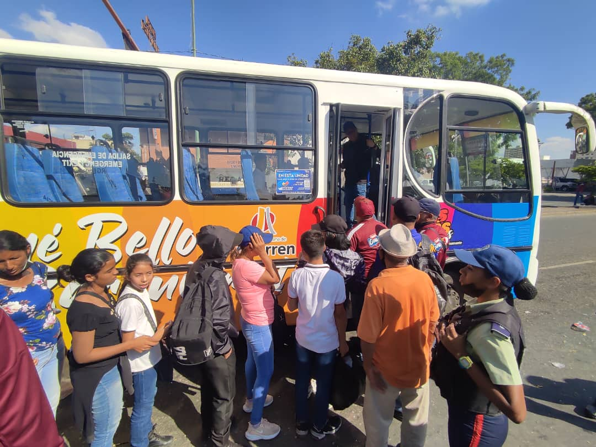
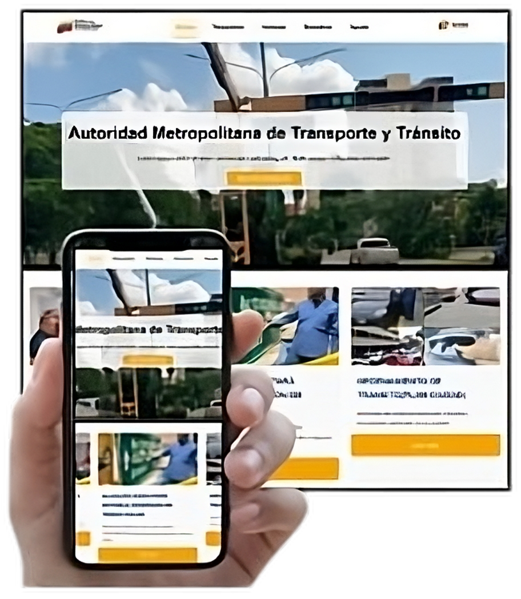

Artículo 2. El sistema de tránsito y transporte terrestre tiene como finalidad ordenar, transformar y orientar el sector hacia su pleno desarrollo. Asimismo, la ejecución de la infraestructura que se requiere para operarlo eficientemente, y finalmente la coordinación de los órganos competentes del Poder Público, en la rectoría, planificación y control del tránsito y del transporte
Artículo 15. Establece las obligaciones generales de los conductores, incluyendo el transporte público. Entre ellas, se destaca la obligación de portar la licencia de conducir, la matrícula del vehículo y la póliza de seguro obligatorio.
Artículo 16. Son atribuciones del Instituto Nacional de Tránsito y Transporte Terrestre, las
siguientes: Primeramente planificar y ejecutar programas de fortalecimiento institucional del sector de tránsito y transporte terrestre. También otorga y controla las placas identificadoras de vehículos, destinadas al uso público o privado, en las diferentes clasificaciones y modalidades. Del mismo modo otorga las autorizaciones para la prestación de los servicios de transporte público de pasajeros y de carga en el ámbito de la competencia nacional. Ademas Hace seguimiento al comportamiento de las tarifas del transporte público de pasajeros y de carga, en los casos en que sea competente. Aplicar las sanciones administrativas, en los casos previstos en este Decreto de Ley del mismo modo llevar estadísticas del tránsito y transporte terrestre, en coordinación con el Instituto Nacional de Estadísticas. El punto mas importante de este articulo tiene por objetivo el promover la educación y seguridad vial, en coordinación con los órganos competentes. Por añadidura velar por el correcto funcionamiento en la prestación del servicio de trasporte terrestre.
Artículo 65. En el Reglamento respectivo se establecerán las normas para la protección de las vías, sus instalaciones y elementos funcionales, así como para los usos a que fueren susceptibles las zonas de dominio público, servidumbres y otras áreas adyacentes a las vías públicas.
En un mundo cada vez más digitalizado, las Tecnologías de la Información y la Comunicación (TIC) han revolucionado la forma en que las instituciones interactúan con sus usuarios. La Autoridad Metropolitana de Transporte y Tránsito (AMTT) no es una excepción. Ante la creciente demanda de información precisa y actualizada por parte de los ciudadanos, se hace necesario desarrollar herramientas tecnológicas que faciliten el acceso a los servicios y optimicen la gestión institucional.
La Autoridad Metropolitana de Transporte y Tránsito (AMTT) surgió en 1981 como una respuesta a la creciente complejidad del sistema de transporte en Barquisimeto. Inicialmente concebida como un organismo municipal encargado de regular el transporte urbano, la AMTT ha evolucionado significativamente a lo largo de los años, ampliando su jurisdicción y asumiendo nuevas responsabilidades. Este ente tiene como objetivo analizar y mejorar los aspectos relacionados a la AMTT, su estructura actual y el impacto en la gestión del transporte público y el tránsito en la región de Barquisimeto y Cabudare.
El desarrollo de un sitio web informativo para la AMTT representa un paso importante para la institución para la mejora al acceso de información de transporte público en Barquisimeto, y proporciona información actualizada y ágil. La creación de este proyecto contribuirá a aumentar la satisfacción de los usuarios y fortalecer la relación entre la AMTT y la comunidad.
La ausencia de un sitio web que brinde información actualizada y accesible sobre horarios, tarifas, rutas, servicios y otros aspectos relevantes del servicio genera pérdidas de tiempo y desinformación para los usuarios. La implementación de un sitio web oficial de la Autoridad Metropolitana de Transporte y Tránsito (AMTT) de Barquisimeto representa una herramienta significativa para mejorar la comunicación y satisfacción de los usuarios del servicio de transporte público.
La implementación de esta propuesta generará un impacto positivo en todos los actores involucrados. Los trabajadores de la institución se verán beneficiados con esta propuesta de proyecto. Por otra parte, los usuarios y pasajeros del transporte público en el área urbana de Barquisimeto Estado Lara también se verán favorecidos.
El proyecto presenta un plan de acción para el desarrollo e implementación del sitio web informativo de la Autoridad Metropolitana de Transporte y Tránsito (AMTT). Se describen las etapas clave del desarrollo, desde el diseño inicial hasta la capacitación del personal, con el objetivo de proporcionar una herramienta digital que mejore la comunicación con los usuarios y optimice los procesos internos de la institución.
Se desarrolló una estructura de navegación intuitiva, compuesta por un menú principal con enlaces a las secciones de Inicio, Noticias, Nosotros, Contacto y Requisitos, esta última cuenta con un submenú que detalla los cuatro tipos de requisitos necesarios.
En definitiva se alcanzó su objetivo general que fue Desarrollar un Sitio web informativo para la Autoridad Metropolitana de Transporte y Tránsito (A.M.T.T) dirigidos a los usuarios de transporte y tránsito en Barquisimeto Estado Lara. Se logró verificar que todas las funcionalidades del sitio web funcionen correctamente y evaluar la facilidad de uso del mismo, seguidamente se subió el sitio web a un servidor.